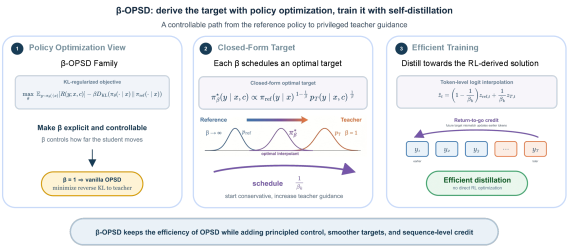
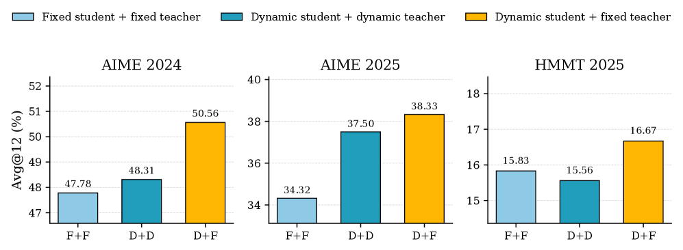

在策略上自蒸馏（OPSD）是提升推理语言模型的有力途径，但实践上很脆弱：想让它稳定工作往往需要大量工程调优。论文定位到一个结构性根源：vanilla OPSD 恰恰是更广策略优化族里 β=1 的一员，其中 β 加权将学生锚定到 reference policy 的 KL penalty。这一等价关系把 β 从固定为 1 的隐式值变成可控的正则参数，得到更一般的表述——它在「紧贴参考策略」与「跟随特权教师」之间做权衡。论文引入 β-OPSD，并把其最优策略推导为 reference policy 与 privileged teacher 之间的几何插值。
自蒸馏（self-distillation）与在策略自蒸馏（OPSD）的价值在于：不用外部教师或奖励模型，让模型把自己当前的（或历史的）输出当作监督信号，自我提升推理能力。OPSD 尤其吸引人，因为它比完整 RL 简单得多。
但它的可靠性是个问题：在真实部署中，OPSD 需要大量工程折衷才能稳定工作，超参稍不对就可能退化或训练崩溃。这类「脆弱」通常是表面症状，背后常有结构性原因。
论文的主张：OPSD 的脆弱根源于它的正则项被悄悄锁死了。vanilla OPSD 里学生被一个强度固定的 KL penalty 锚定到某个 reference policy 上——而这个强度恰好对应 β=1。一旦看清楚这一点，问题就从「怎么调 OPSD」变成「β 这只旋钮该怎么转」。
β-OPSD 的核心是把 β 从固定值还原回可控的正则参数。β 加权 KL penalty，让学生不至于离参考策略太远；调整 β 就是在「依赖参考策略的保守性」与「采纳特权教师指导的激进性」之间做连续权衡。
最优策略是一个几何插值：β 取不同值时，闭式最优解落在 reference policy 与 privileged teacher 之间的插值路径上。β 越小越贴近教师（激进），β 越大越贴近参考策略（保守）。

这条闭式解路径正是本文的杠杆：既然最优目标是解析已知的，就不必真的去跑高成本、高方差的 RL 优化。这正是「从策略优化回到蒸馏」的关键一步。
不直接优化 RL 目标，而是把它闭式解变成蒸馏目标。 每个 β 值在 reference→teacher 路径上选中一个目标，论文用混合两者的 token 级 logits 高效实现：p̃_βk = softmax((1−1/β_k)·z_ref + (1/β_k)·z_T)。
概率的几何插值等价于 logits 的线性插值（到归一化为止）。所以这个自回归的插值目标 p̃_βk，是对序列级最优（Eq.5）一个可处理的局部逼近。每一步训练，学生就最小化当前学生分布与这个调度的插值目标之间的 KL 散度。
这个目标的形式与 vanilla OPSD 完全一致——唯一区别是固定的教师 p_T 换成了随 β_k 调度的插值目标 p̃_βk。当 β_k=1 时插值目标退化为特权教师，Eq.12 就还原成标准 OPSD；β_k 越大，目标越贴近参考策略，越保守。
Return-to-go 信用分配进一步把每个 token 的更新与序列级目标对齐，给蒸馏目标补充了「这段轨迹整体拿多少奖励、每个 token 该为它负多少责」的信号——这让 token 更新不再只看局部分布匹配，还能传递整条生成路径的回报信息。
这种「调度插值目标」的设计还带来自适应的好处：训练早期学生还很弱、离参考策略近，β 可以设大一点让目标保守、稳住训练；随训练推进学生能力增强，再调小 β 让目标更贴近教师、加大提升幅度。β_k 随训练步 k 变化的路径本身就是一个可设计的训练计划，这正是论文在插值调度实验（Table 4）里探究的维度。
论文在数学推理基准上系统评估 β-OPSD，与 vanilla OPSD 及多种教学蒸馏/策略优化基线对比。核心结论是一致超出 vanilla OPSD——不管对哪个 Qwen 模型尺寸、哪种代数、在哪个检查点评估，β 的引入都带来更稳的训练轨迹与更好的最终表现。
消融实验把收益拆解到组件层面：蒸馏目标（logit 插值 vs. 直接跟教师）与 return-to-go 信用分配各自都有独立的贡献（Tables 2-3）。插值参考的选择（Figure 2）和插值调度（Table 4）也都被证明会影响最终质量——印证了 β 「旋钮」在这条路径上游刃有余。
混合学生—教师采样的实验（Table 6）进一步确认：从 logit 插值分布采样、配合折扣因子 γ=0.99 与重要性采样，能让训练在探索与利用之间取得更好平衡。

把 β 当可调超参还能实际带来工程收益：在默认 200 步训练计划里的 100 步检查点上，β-OPSD 已展现出明显更早的收敛与更高上限，意味着同样算力下可以更早获得可用模型。
参考：https://arxiv.org/html/2607.28582v1